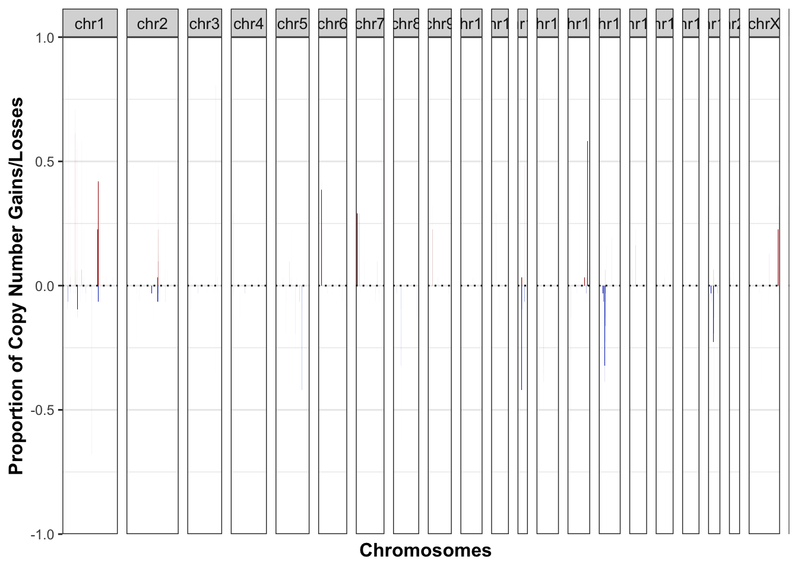

Chapter 24 CNV calling
CNV calling was performed with BICseq
24.1 Sample data
Load BICseq2 data for all tested samples:
allfiles=dir("../data/CNV_calls/","2_scale$", full.names = T)
CNVL2=lapply(allfiles, function(x) read.delim(x, stringsAsFactors = F))
meltCN=melt(CNVL2, measure.vars=c("log2.copyRatio"))
AllDCN=data.frame(sampleID=meltCN$L1, chrom=substr(meltCN$chrom, 4, 5), start.pos=meltCN$start,
end.pos=meltCN$end, n.probes=meltCN$binNum, mean=meltCN$value,
call=ifelse(meltCN$value>0.3, "+", ifelse(meltCN$value<(-0.3), "-", "0")))
AllDCN2=data.frame(sample=meltCN$L1, chromosome=meltCN$chrom, start=meltCN$start,
end=meltCN$end, n.probes=meltCN$binNum, segmean=2*2^(meltCN$value),
call=ifelse(meltCN$value>0.3, "+", ifelse(meltCN$value<(-0.3), "-", "0")))
AllDCN2$chromosome=factor(AllDCN2$chromosome, levels=unique(AllDCN2$chromosome))
CNVGRanges=GRanges(seqnames = AllDCN$chrom, ranges=IRanges(start=AllDCN$start.pos, end=AllDCN$end.pos), copy_ratio=AllDCN$mean, call=AllDCN$call)24.2 Data Summary
24.2.1 Frequency of gains and losses across the genome
# plot the frequencies
Samp1=cnFreq_mod(AllDCN2,CN_low_cutoff=1.4, CN_high_cutoff=2.8, genome=cytoInfo)
Samp1$plot

Figure 24.1: summary of regions of frequent gains and losses
24.2.2 Loci which have a hit in at least 30% of samples
# Filter out gain and loss regions
LocationsA=Samp1$data[which(Samp1$data$gainProportion>0.3), ]
LocationsA=LocationsA[order( LocationsA$chromosome, LocationsA$start), ]
LocAmerge=Merge_contig(LocationsA)
LocationsB=Samp1$data[which(Samp1$data$lossProportion>0.3), ]
LocationsB=LocationsB[order( LocationsB$chromosome, LocationsB$start), ]
LocBmerge=Merge_contig(LocationsB)
# turn into a GRanges object
LocAGRanges=GRanges(seqnames = LocAmerge$chromosome, ranges=IRanges(start=LocAmerge$start, end=LocAmerge$end), strand="*",
sampleFrequency=LocAmerge$sampleFrequency, gainFrequency=LocAmerge$gainFrequency, lossFrequency=LocAmerge$lossFrequency, gainProportion=LocAmerge$gainProportion, lossProportion=LocAmerge$lossProportion)
LocBGRanges=GRanges(seqnames = LocBmerge$chromosome, ranges=IRanges(start=LocBmerge$start, end=LocBmerge$end), strand="*",
sampleFrequency=LocBmerge$sampleFrequency, gainFrequency=LocBmerge$gainFrequency, lossFrequency=LocBmerge$lossFrequency, gainProportion=LocBmerge$gainProportion, lossProportion=LocBmerge$lossProportion)
# find the overlaps
GainOLap=findOverlaps(LocAGRanges, txRn6)
UniqueGainOlapRegions=unique(queryHits(GainOLap))
GainGenes=sapply(unique(queryHits(GainOLap)), function(x) txRn6$gene_id[subjectHits(GainOLap[which(queryHits(GainOLap)==x)])])
LossOLap=findOverlaps(LocBGRanges, txRn6)
UniqueLossOlapRegions=unique(queryHits(LossOLap))
LossGenes=sapply(unique(queryHits(LossOLap)), function(x) txRn6$gene_id[subjectHits(LossOLap[which(queryHits(LossOLap)==x)])])Venn diagrams of the number of genes which intersect with the cosmic dataset
OverviewG=unique(unlist(GainGenes))
OverviewL=unique(unlist(LossGenes))
par(mfrow=c(1,2))
venn(list(CNVgains=OverviewG, cosmic=RatCosmic))
venn(list(CNVloss=OverviewL, cosmic=RatCosmic))
The intersecting gene is Lrp1b, Grin2a
Venn diagram of immune related genes:
par(mfrow=c(1,2))
venn(list(CNVgains=OverviewG, Immune=RatAllImm))
venn(list(CNVloss=OverviewL, Immune=RatAllImm))
The gained genes are Mir295-2, Scarb1 The lost genes are Ccl28, Mff, Pdcd1, Arrb2, Mx2
24.2.3 Annotated plot of genome and locations of genes
S2=Samp1$data
S2=S2[order(S2$chromosome, S2$start), ]
GG2=sapply(GainGenes, length)
GG3=unlist(GainGenes)
GG3[which(duplicated(GG3))]=""
GG4=split(GG3, rep(c(1:length(GG2)), times=GG2))
Ggenes=sapply(GG4, function(x) paste(x, sep="", collapse=" "))
Ggenes=gsub(" ", "", Ggenes)
Ggenes[which(Ggenes==" ")]=""
Datx=rep("", nrow(Samp1$data))
Datx[match(LocAmerge$start[UniqueGainOlapRegions], S2$start)]=Ggenes
GG2=sapply(LossGenes, length)
GG3=unlist(LossGenes)
GG3[which(duplicated(GG3))]=""
GG4=split(GG3, rep(c(1:length(GG2)), times=GG2))
Lgenes=sapply(GG4, function(x) paste(x, sep="", collapse=" "))
Lgenes[which(Lgenes==" ")]=""
Daty=rep("", nrow(Samp1$data))
Daty[match(LocBmerge$start[UniqueLossOlapRegions], S2$start)]=Lgenes
##
#S2=Samp1$data
#S2=S2[order(S2$chromosome, S2$start), ]
S2$xLoc=S2$start+chrInfo$sumdist[match(S2$chromosome, chrInfo$Chromosome)]
S2$width=S2$end-S2$start
S2$label=Datx
S3=S2
S3$gainProportion=S3$lossProportion[1:nrow(S2)]*(-1)
S3$label=Daty
S4=rbind(cbind(S3, col="blue"), cbind(S2, col="red"))
S4=S4[-which(S3$gainProportion==0), ]
ggplot(S4, aes(x=xLoc, y=gainProportion, width=width*1.2, label=label, col=col))+geom_bar(stat = "identity")+geom_label_repel()+theme_bw()+xlim(0, chrInfo$sumdist2[22])+geom_vline(xintercept=chrInfo$sumdist2,col="grey")+scale_colour_manual(values=c("blue", "red"))+annotate("text", x=chrInfo$sumdist, y=rep(-1, 22), label=chrInfo$Chromosome, col="black")
24.3 Summary of the sequencing depth
Below, do a quick summary of the WGS data: what is the coverage, and plot the percentage mapping of the coverage:
SeqData=read.delim("../data/wholegenome_mutations/summary_Sequencing_output.txt", sep="\t")
hist(SeqData$MEAN_COVERAGE, breaks=10)
Also, extract the information about coverage:
SeqDatam=melt(SeqData[ ,c(grep("PCT_[0-9]*X", colnames(SeqData)), ncol(SeqData))])
SeqDatam$coverage2=sapply(strsplit(as.character(SeqDatam$variable), "_"), function(x) x[2])
SeqDatam$coverage3=as.numeric(substr(SeqDatam$coverage2, 1, nchar(SeqDatam$coverage2)-1))
ggplot(SeqDatam, aes(x=coverage3, y=value, col=Sample))+geom_line()+theme_bw()+ggtitle("WGS coverage")+ylab("Percentage Reads")+xlab("Coverage X")+xlim(c(0, 75))